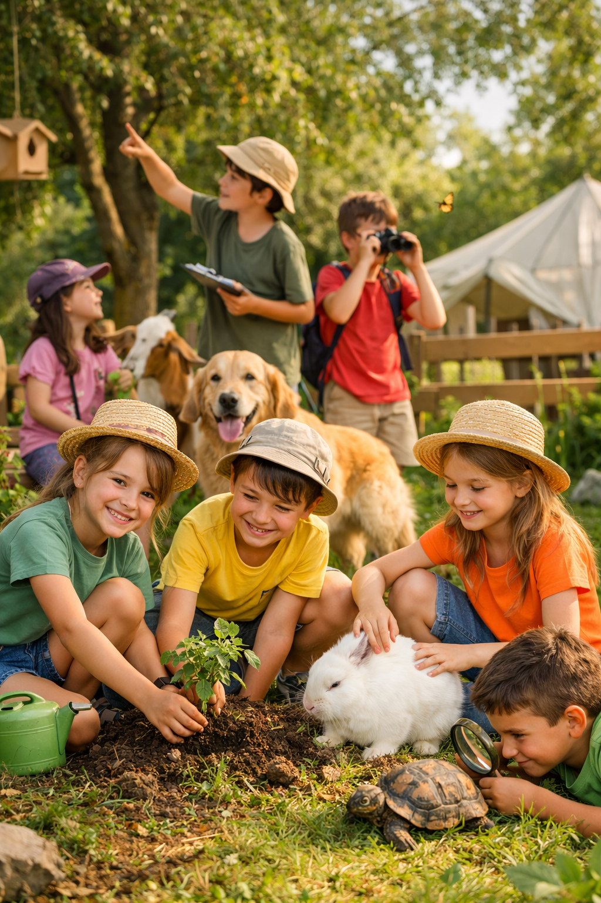

TAILOR-MADE PROJECTS
We offer the possibility of moving our educational and environmental team directly to your school. We design workshops and sessions adapted to each educational stage to promote respect for animals, ecological awareness, and the protection of biodiversity.
- Environmental education and animal welfare.
- Discovery of local fauna and their ecosystems.
- Experiential activities that promote empathy, cooperation, and sustainability.
- Eliminating stereotypes and fostering a culture of respect towards all living beings.

ENVIRONMENTAL MORNINGS
We invite your students to live an immersive experience in our nature and biodiversity space. Practical sessions on fauna, ecosystems, and sustainability designed for each educational cycle.
Preschool Cycle
Experiential introduction to the animal world through stories, sensory games, and wildlife figures. We work on empathy, psychomotricity, and respect for nature.
Primary Cycle
Discovery of biodiversity with practical activities: tracks and footprints, beneficial insects, wildlife hotels, and small nature projects. We foster curiosity, observation, and environmental responsibility.
Secondary & High School
Workshops on ecosystems, applied biology, and wildlife conservation. Field projects, habitat analysis, biodiversity studies, and environmental volunteering actions.
"Educating in biodiversity is teaching to love life in all its forms."
— ECOSAVERS